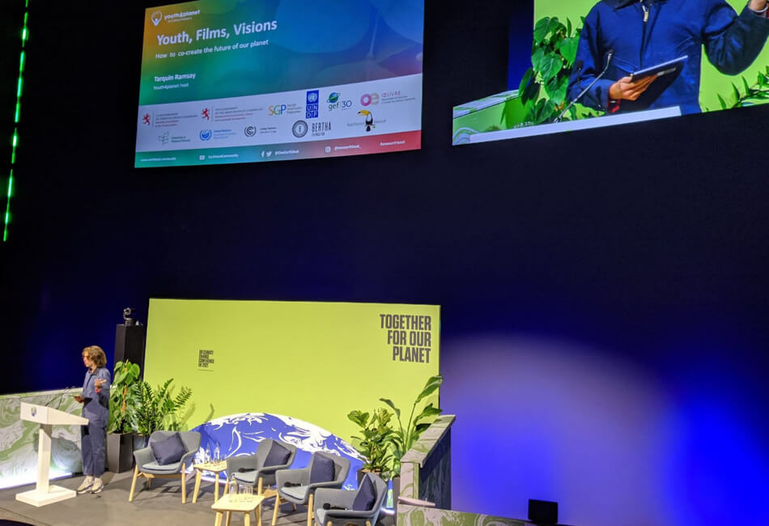

Earthbeat Smartphone Film Challenge and Youth Day Event at COP26
In the run up to COP26 we started working with Youth4planet: Earthbeat, a youth media movement which gives a voice to young people from all around the world in response to the climate emergency. On Friday 5 November they hosted a live COP26 Youth Day event at Glasgow’s IMAX cinema. The event sought to amplify the voices of young people. It was great to hear alternative perspectives in discussions otherwise dominated by world leaders and big corporations.
Part of the IMAX event showcased entries to the Earthbeat challenge. Young people aged between 14 and 30 were asked to submit three-minute smartphone films on the theme of "restoring balance with nature". There were an astounding 77 entries from 31 countries, ranging from Indonesia to St Helena’s, Ukraine to Tanzania. There was a particularly strong selection from countries in the Global South, offering a rare glimpse into the lives of those on the frontline of climate change.
Earthbeat co-founder Tarquin Ramsay was interviewed in Metro. He also hosted a takeover on Extinction Rebellion's Rebel Radio and was interviewed on Times Radio alongside a young filmmaker. BBC World Service also interviewed one of the young filmmakers. More on Earthbeat and next year’s challenge here.